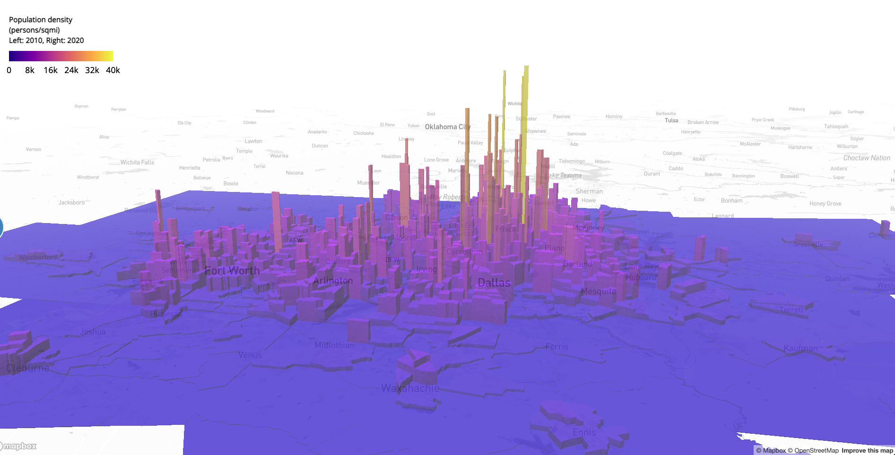
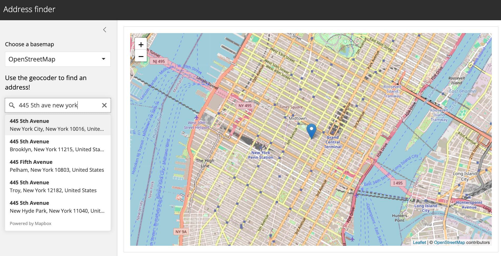

Workshops
WALKER DATA offers custom data science workshops tailored to the needs of your organization as well as online workshops available for purchase.
Check out these testimonials from workshop participants:
I wanted to thank you for the amazing R mapping trainings you provided. They were extremely helpful and sparked some very exciting ideas about how our center can use these resources.
One thing that really stood out was how you shared your own workflow through real-life examples. Seeing the direct application of tidycensus to our day-to-day tasks was a game-changer. It’s safe to say that we’re all feeling a lot more confident about integrating these techniques into our work.
Your assistance in streamlining some of our existing workflows was a huge bonus. It’s not just the “how-to” that’s valuable, but also the practical insights you provided.
Your excitement about the whole topic was infectious. It’s not easy to keep a group engaged all day, but you nailed it. Your enthusiasm made a huge difference.
Reach out to kyle@walker-data.com to discuss your workshop needs today, or purchase a recorded workshop from the links below.
mapgl Workshop Series
The brand-new mapgl package brings the powerful web mapping libraries Mapbox GL JS and MapLibre GL JS to R - and this workshop series is the best place to learn it. Buy the workshop bundle for 7.5 hours of workshop recordings and three step-by-step annotated tutorials to help you make stunning interactive maps with your data in R.

You’ll get the following three workshops:
- Make Stunning Web Maps in R with the mapgl Package
- Dynamic Business Intelligence Apps in R with Shiny and mapgl
- Visualize US Census Data in R with tidycensus and mapgl
Don’t need all three? Each individual workshop is available for purchase as well.
Location Intelligence and Web Apps with Shiny Workshops
Learn essential location intelligence skills like geocoding, routing, and travel-time analytics in R, and display your results in a dynamic web mapping application! This bundle gets you five hours of custom workshops and two annotated tutorials not found anywhere else.
Workshop 1: Location Intelligence with R and Mapbox

This 2.5 hour workshop is designed to help you build skills in location intelligence to benefit your business or organization. You’ll use analytical tools like R and Mapbox to identify customer and store locations, perform travel-time analytics, build sales territories, and much more.
Workshop 2: Building Web Mapping Applications with R and Shiny

This 2.5 hour workshop will teach you the fundamentals of building interactive web mapping applications using R and Shiny, R’s powerful framework for app development. By the end of the workshop, you’ll have the skills to create your own reactive mapping applications that include charts, custom design components, and more.
GIS and Interactive Mapping Workshops
Get started with Geographic Infomation Systems, spatial data analysis, and interactive mapping in R in 5 hours of custom workshops. The workshops are available for purchase separately or as a bundle for a $100 discount!
Workshop 1: Getting Started With Geographic Information Systems in R

In this 2.5 hour workshop, you will gain the skills you need to get started with Geographic Information Systems using the R programming language. You’ll learn the fundamentals of doing GIS in R, gain experience with R’s powerful toolset for spatial data analysis, and learn how to connect R to desktop GIS tools like ArcGIS and QGIS.
Workshop 2: Interactive Mapping with R

In this workshop, you will learn how to make elegant interactive maps with minimal code using the R programming language. You’ll gain experience with a range of libraries for interactive mapping in R; learn how to customize and share interactive maps; and dynamically link maps and charts using R.
2020 Census workshops
Learn all about using the new 2020 Decennial Census data with R and tidycensus in 5 hours of custom workshops. You can purchase each workshop separately, or buy the workshop bundle and save $100!
Workshop 1: Access and Analyze the New 2020 Decennial Census Data

In this workshop, you’ll learn how to analyze the 2020 Decennial Census’s Demographic and Housing Characteristics file using R and the tidycensus R package. Topics covered will include brand-new functionality in tidycensus to acquire and process data from the 2020 DHC file to help you analyze the data right away. You’ll gain experience with the tidyverse ecosystem of tools to reveal insights in the new data, and you’ll learn how to create stunning data visualizations to communicate those insights.
Workshop 2: Mapping and Spatial Analysis with the 2020 Decennial Census

Maps are powerful tools for communicating insights in the 2020 DHC data. In this workshop, you’ll learn how to use R and tidycensus to get spatial Census data seamlessly, and visualize the new data with a range of cartographic tools. You’ll also learn all about Census geography and how to perform powerful spatial analyses with 2020 Census data.
You get the following materials with your workshop purchase:
Unlimited access to the workshop videos
Custom tutorials on working with Census data not posted anywhere else
For updates on these workshops and more data analysis content, subscribe to the Walker Data mailing list: